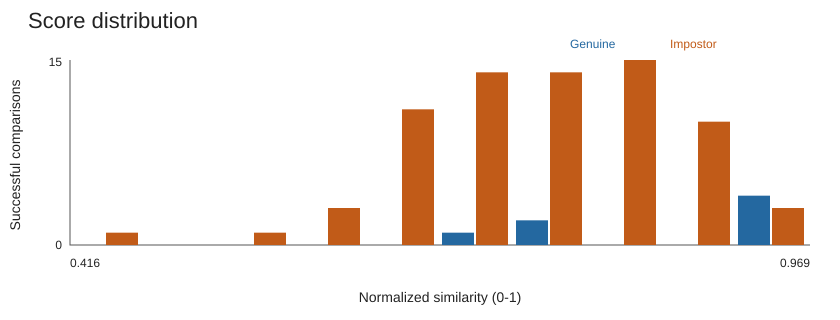
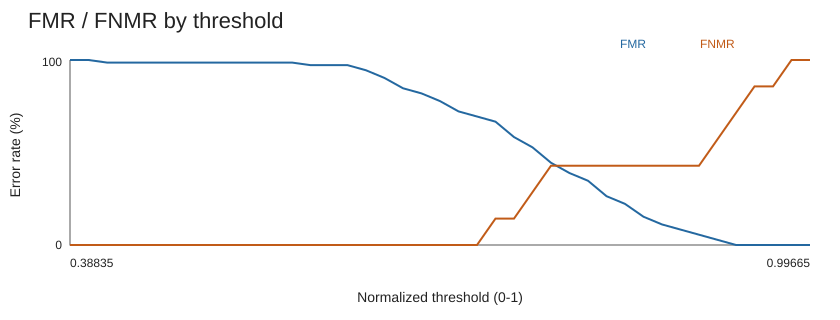
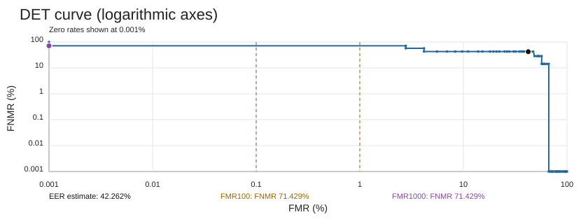

Status: Results available.
Each enrolled image is saved as a template. Higher scores mean more similar fingerprints. The selected DLL supplies the similarity; its templates are opaque. Scores are not match probabilities.
database=C:/Users/hajaemin/FinalProject/data/original/FVC2002_DB3_B algorithm_path=C:/Users/hajaemin/Desktop/Advanced_OOP/build/Release/IndustryAlgorithm.dll timeout_ms=30000 concurrency=1 comparison_type=Both template_format=opaque bytes; lengths retained algorithm_signature=2a581ca26a67fa21d8a7ed16d40b0ce59a8ed91d8044bc72908cf006a91eec05 score_aggregation=selected DLL responsibility matching_time=KISA_Compare only report_metrics=FTE (%); REJ genuine (%); REJ impostor (%); FMR (%); FNMR (%); EER (%); EER* (%); ZeroFMR (%); ZeroFNMR (%); FMR100 (%); FMR1000 (%); Enrollment time (ms); Matching time (ms); Genuine time (ms); Impostor time (ms); Mean template size (bytes); Max template size (bytes) genuine_rule=All eligible images impostor_rule=All eligible images
Genuine (same finger): score >= threshold = PASS, below = MISS (false rejection). Impostor (different fingers): score < threshold = REJ (correct rejection), otherwise = FA (false acceptance). Genuine threshold: 0.5; Impostor threshold: 0.5. ERR means inference failed without a score.
| Algorithm | DLL file | Status |
|---|---|---|
| kisa_dll | C:/Users/hajaemin/Desktop/Advanced_OOP/build/Release/IndustryAlgorithm.dll | Ready |
| Metric | Value |
|---|---|
| FTE (%) | 0 (FAIL=0, TIMEOUT=0, CRASH=0, MISMATCH=0, CANCELLED=0) |
| REJ genuine (%) | 0 (FAIL=0, TIMEOUT=0, CRASH=0, MISMATCH=0, CANCELLED=0) |
| REJ impostor (%) | 0 (FAIL=0, TIMEOUT=0, CRASH=0, MISMATCH=0, CANCELLED=0) |
| FMR (%) | 98.6111 |
| FNMR (%) | 0 |
| EER (%) | 42.2619 [41.6667 - 42.8571] |
| EER* (%) | 42.2619 [41.6667 - 42.8571] |
| ZeroFMR (%) | 71.4286 |
| ZeroFNMR (%) | 66.6667 |
| FMR100 (%) | 71.4286 |
| FMR1000 (%) | 71.4286 |
| Enrollment time (ms) | 9.3049 |
| Matching time (ms) | 0.0052481 |
| Genuine time (ms) | 0.00641429 |
| Impostor time (ms) | 0.00513472 |
| Mean template size (bytes) | 16 |
| Max template size (bytes) | 16 |
FMR uses the Impostor threshold; FNMR uses the Genuine threshold. FMR/FNMR use planned-pair denominators; failed genuine attempts count as nonmatches. REJ excludes pairs blocked by enrollment failure. Matching time measures KISA_Compare only; attempt generation is separate in model_scores.csv. EER shows the assignment midpoint estimate and bounds; EER* uses successful pairs only. EER and curves sweep a common threshold independently of the entered thresholds.



Enrollment images | Comparison pairs in saved order | All metrics | Run settings | Selected models | Per-model scores and failures
Only selected metrics appear in this report. CSV files keep all metrics and raw results. Self-image comparisons are excluded.